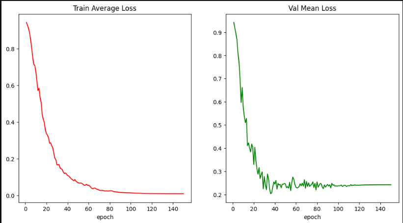
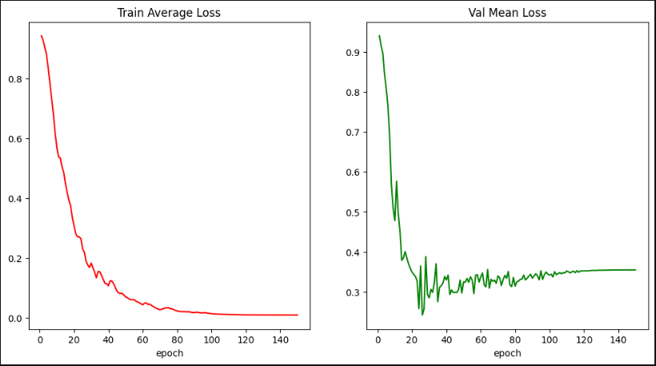
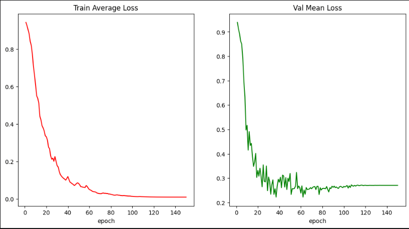
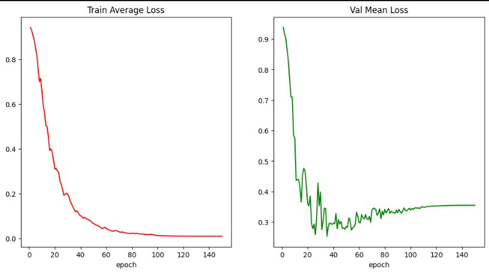
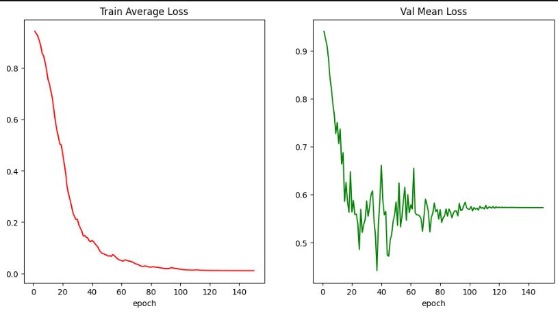
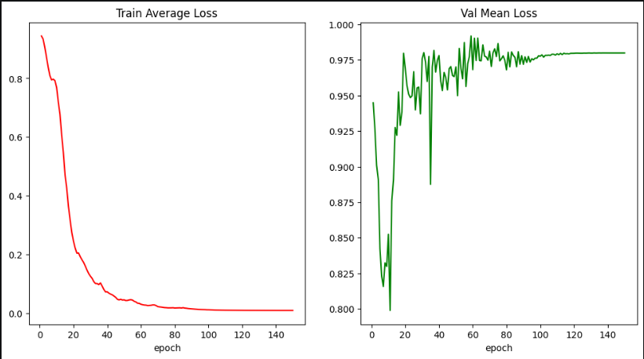

Results¶
Quantitative and qualitative outcomes of model training, segmentation evaluation, and morphological post-processing. Full narrative: Results — full narrative.
Evaluation tables (one CSV per morphology method):
| Method | CSV |
|---|---|
| Opening | tabela_avaliacao_experiencias_opening.csv |
| Closing | tabela_avaliacao_experiencias_closing.csv |
| Erosion | tabela_avaliacao_experiencias_erosion.csv |
| Dilation | tabela_avaliacao_experiencias_dilation.csv |
Training analysis¶
Training and validation loss curves for each preprocessing configuration:
Original dataset¶

PP1 — Average filter¶

PP2 — Median filter¶

PP3 — Gaussian filter¶

PP4 — Sobel filter¶

PP5 — Laplacian filter¶

All experiments converged without severe optimisation instability. Gaussian preprocessing (PP3) yielded the most favourable validation behaviour and segmentation metrics.
Morphological post-processing¶
Four operators were evaluated in separate notebook runs (POSTPROCESS_METHOD): erosion, dilation, opening, and closing. Each run produces a No / Yes comparison table (12 rows: 6 experiments × 2).
Best overall result: PP3 + Opening — Dice 0.5015
Comparative summary¶
| Configuration | Best operation | Best Dice |
|---|---|---|
| Original | Closing | 0.4720 |
| PP1 (Average) | None | 0.4745 |
| PP2 (Median) | Closing | 0.4444 |
| PP3 (Gaussian) | Opening | 0.5015 |
| PP4 (Sobel) | Opening | 0.3426 |
| PP5 (Laplacian) | Dilation | 0.1135 |
Top configurations¶
| Rank | Configuration | Dice |
|---|---|---|
| 1 | PP3 + Opening | 0.5015 |
| 2 | PP3 + Closing | 0.4998 |
| 3 | PP3 (no morphology) | 0.4998 |
Conclusions¶
Gaussian filtering provided the strongest preprocessing input. Opening achieved the highest Dice score, offering a balanced precision–recall trade-off. Gradient-emphasising filters (Sobel, Laplacian) degraded performance relative to intensity-preserving smoothing.
Recommended pipeline: Gaussian preprocessing → UNet segmentation → opening post-processing.
Extended discussion, future work, and figure captions: Results — full narrative · Final Report